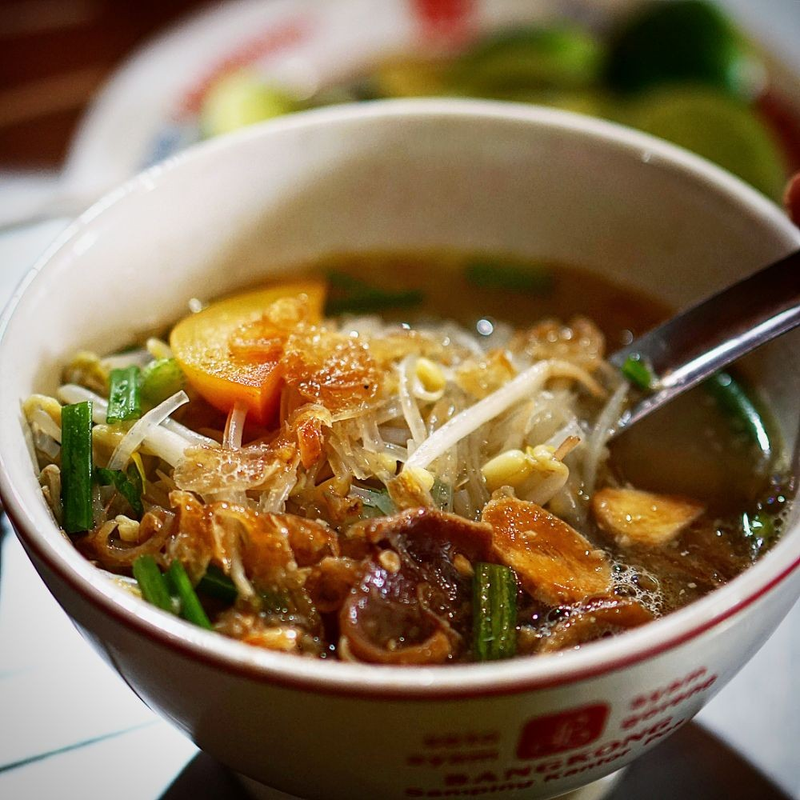
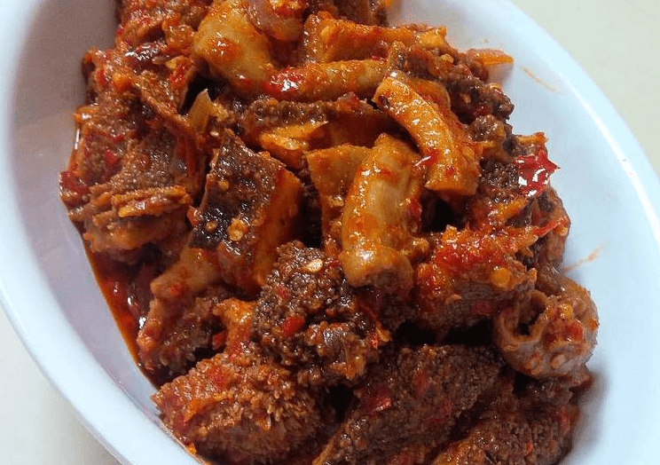
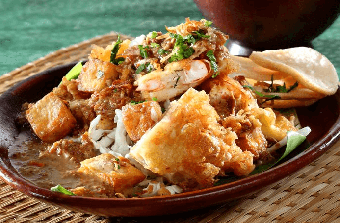
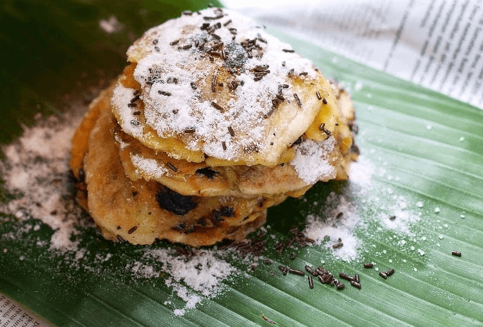
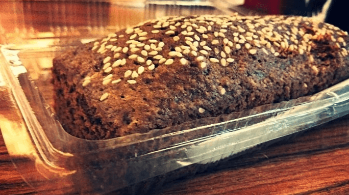

Terkenal dengan destinasi wisata yang tiada habisnya, Semarang selalu menjadi daya tarik tersendiri bagi para wisatawan. Ada Lawang Sewu,
Kelenteng Sam Po Kong, dan masih banyak lagi yang lainnya.
Tapi, kalau berkunjung ke destinasi wisatanya saja kayaknya kurang afdol ya. Supaya liburan lebih berwarna, kamu juga harus mencoba makanan
khasnya juga dong. Di antaranya seperti di bawah ini.

1. Soto Bangkong
Semarang juga punya soto, namanya soto bangkong. Agak beda dari pada umumnya, kuahnya agak cokelat dan bening.

2. Babat Gongso
Pecinta jeroan, mari merapat dan cobain babat gongso khas Semarang ini. Diolah dengan kecap manis, babat gongso cocok
disantap dengan nasi putih atau nasi goreng.

3. Tahu Gimbal
Isinya ada tahu goreng, tempe, udang, irisan kol, dan tahu gimbal. Ada saus kacang pula di atasnya.

4. Pisang Plenet
Sudah mulai jarang ditemui, kamu harus coba pisang plenet ini. Pisangnya dibakar dengan arang, ditaburi meses,
keju, atau gula halus.

5. Roti Ganjel Rel
Roti ganjel rel ini mirip banget sama roti gambang. Teksturnya agak keras dan padat, jadi sajian wajib sebelum Ramadan nih.